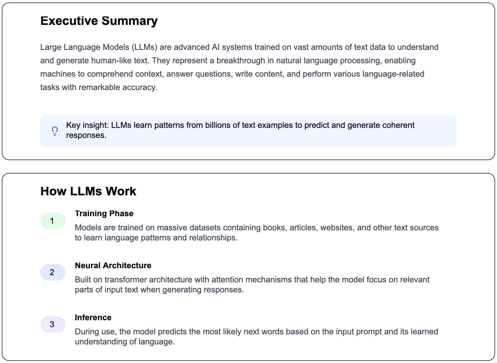
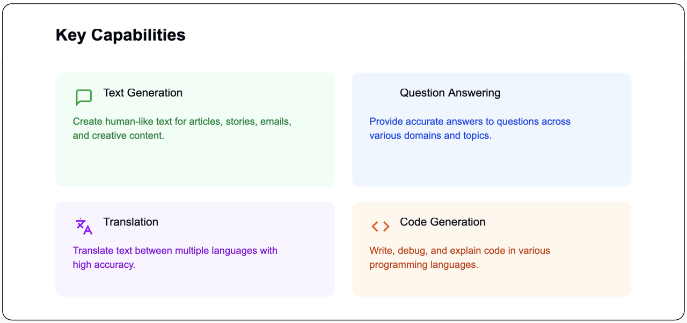
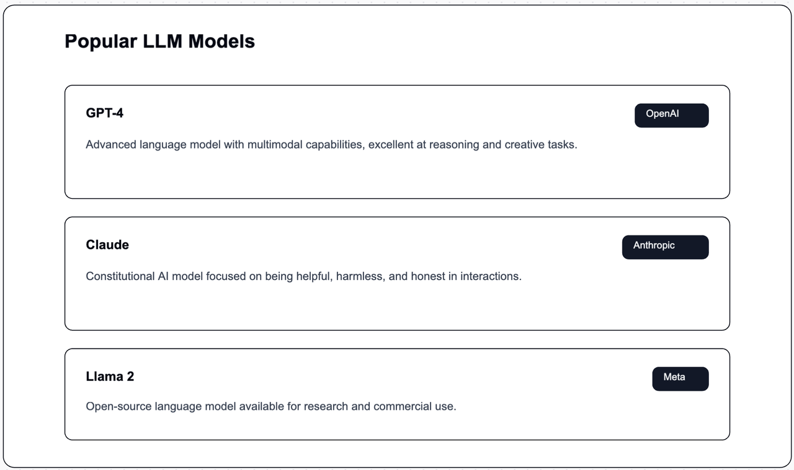
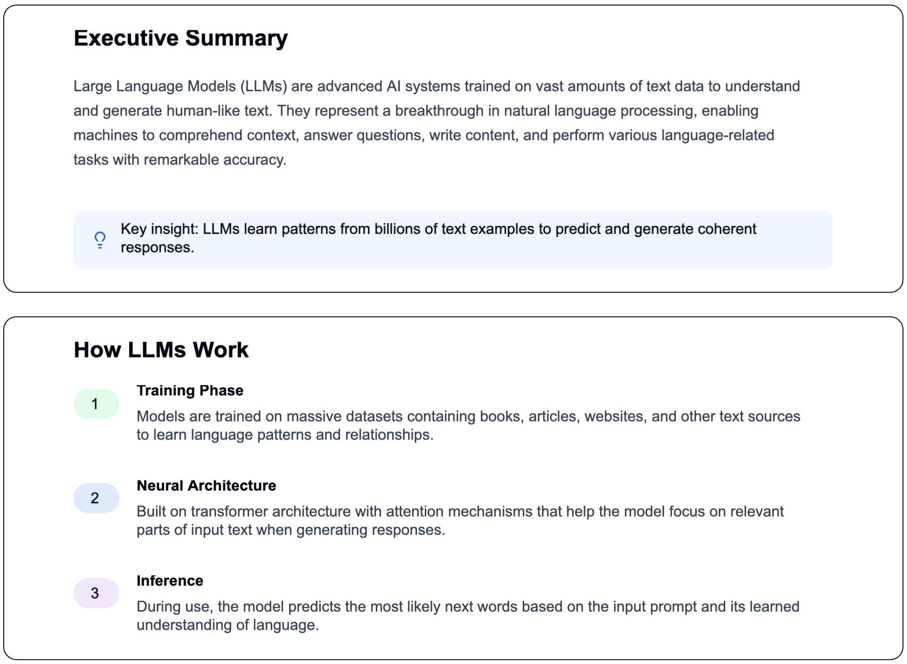
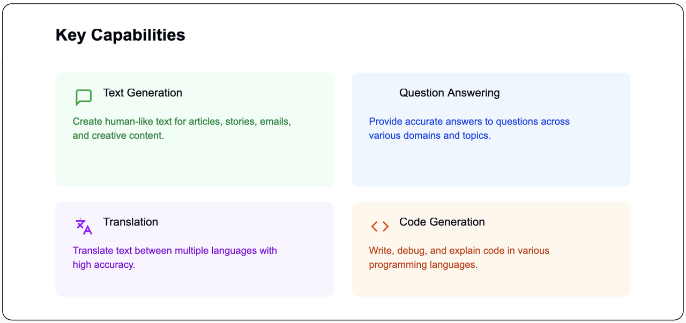
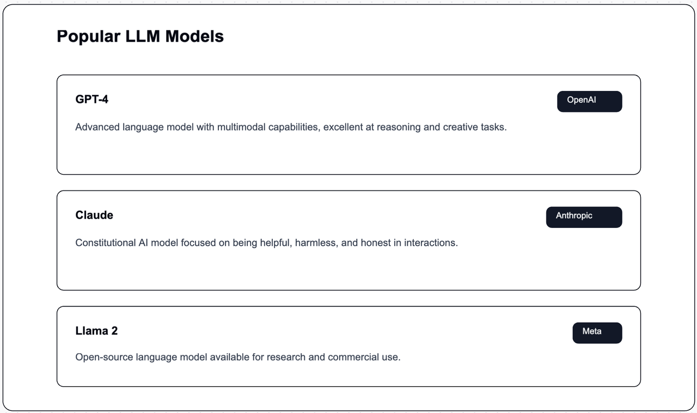

What are Large Language Models (LLMs) ?
The Evolution of Large Language Models: From Turing's Vision to the Reality of ChatGPT
The Evolution of Large Language Models: From Turing's Vision to the Reality of ChatGPT
High bias in machine learning results in underfitting, characterized by the model making oversimplified assumptions about the relationships within the data. This leads to subpar performance on both training and test datasets, demonstrating that the model does not possess the necessary complexity to capture the underlying patterns.
In this example, we will check house price prediction using two methods:
import pandas as pd
import matplotlib.pyplot as plt
from sklearn.metrics import make_scorer, mean_squared_error
from sklearn.preprocessing import StandardScaler
from sklearn.model_selection import train_test_split
from sklearn.linear_model import LinearRegression
import sklearn.datasets
from sklearn.preprocessing import PolynomialFeatures
from sklearn.pipeline import Pipeline
house_price_dataset = sklearn.datasets.fetch_california_housing()
print(house_price_dataset.DESCR)
# Loading the dataset to a pandas dataframe
df_house_data = pd.DataFrame(house_price_dataset.data, columns = house_price_dataset.feature_names)
df_house_data.head()
# add the target column
# target is median house value in block group (in $100,000s).
df_house_data['price'] = house_price_dataset.target
df_house_data.head()
# Prepare data
X = df_house_data.drop('price', axis=1)
y = df_house_data['price']
# Split and scale
X_train, X_test, y_train, y_test = train_test_split(X, y, test_size=0.2)
scaler = StandardScaler()
X_train_scaled = scaler.fit_transform(X_train)
X_test_scaled = scaler.transform(X_test)
# Train linear model
model = LinearRegression()
model.fit(X_train_scaled, y_train)
# Evaluate
train_pred = model.predict(X_train_scaled)
test_pred = model.predict(X_test_scaled)
print("Training MSE:", mean_squared_error(y_train, train_pred))
print("Test MSE:", mean_squared_error(y_test, test_pred))
train_score = model.score(X_train_scaled, y_train)
test_score = model.score(X_test_scaled, y_test)
print(f"Training R² Score: {train_score:.4f}")
print(f"Test R² Score: {test_score:.4f}")
The mean squared error is decreased in test set.
The R² score is increased in test set.
-- R² Interpretation: An R-squared value of 0.75 indicates that 75% of the variation in house prices can be attributed to factors such as square footage, location, and the amenities included in the model.
Why Use both PolynomialFeatures and LinearRegression in the Pipeline:
- The first PolynomialFeatures transformation creates a more complex feature space.
- The LinearRegression then fits a linear model to these non-linear features.
- This effectively allows a linear model to approximate non-linear relationships.def polynomial_regression_model(X_train, X_test, degree=2):
# Create pipeline
model = Pipeline([
('scaler', StandardScaler()),
('poly', PolynomialFeatures(degree=degree)),
('linear', LinearRegression())
])
# Fit and evaluate
model.fit(X_train, y_train)
# Evaluate
train_pred = model.predict(X_train_scaled)
test_pred = model.predict(X_test_scaled)
print("Training MSE:", mean_squared_error(y_train, train_pred))
print("Test MSE:", mean_squared_error(y_test, test_pred))
train_score = model.score(X_train, y_train)
test_score = model.score(X_test, y_test)
print(f"Training R² Score: {train_score:.4f}")
print(f"Test R² Score: {test_score:.4f}")
return model, X_train_poly, X_test_poly
# Example usage with housing data
model_poly, X_train_poly, X_test_poly = polynomial_regression_model(
X_train_scaled, X_test_scaled
)
Machine Learning models learn the relationship between input (features) and output (target) using learnable parameters. The size of these parameters defines the complexity and flexibility of a given model.
There are two typical scenarios. When the flexibility of a model is insufficient to capture the underlying pattern in a training dataset, the model is called underfitted. Conversely, when the model is too flexible to the underlying pattern, it is said that the model has “memorized” the training data, resulting in an overfitted model.
Consider a system that can be explained by a quadratic function, but we use a simple line to represent it, i.e., a single parameter to capture the underlying trends in the data. Because the function lacks the required complexity to fit the data (two parameters), we end up with a poor predictor. In this case, the model will have high bias, meaning we will get consistent but consistently wrong answers. This is called an underfitted model.
Now imagine that the true system is a parabola, but we use a higher-order polynomial to fit it. Due to natural noise in the data used to fit (deviations from the perfect parabola), the overly complex model treats these fluctuations and noise as intrinsic properties of the system and attempts to fit them. The result is a model with high variance.
More details: